Ruby
Ruby Basic 1
Resumen
Ruby es un lenguaje de programación de alto nivel, dinámico y orientado a objetos. Fue desarrollado por Yukihiro "Matz" Matsumoto en Japón a mediados de los 90. Ruby se destaca por su sintaxis clara y expresiva, y su enfoque en la programación fácil y agradable.
En Ruby, todo es un objeto, lo que significa que cada valor y función se representa como un objeto en tiempo de ejecución. Ruby cuenta con una gran cantidad de características y bibliotecas estándar que lo hacen adecuado para una amplia variedad de aplicaciones, desde la creación de scripts hasta el desarrollo web y de aplicaciones móviles.
Algunas de las características notables de Ruby incluyen:
- Una sintaxis fácil de leer y escribir que favorece la legibilidad y la simplicidad.
- Un sistema de tipos dinámicos que permite una gran flexibilidad en la escritura de código.
- Soporte integrado para programación orientada a objetos, incluyendo clases, objetos, métodos y herencia.
- Un recolector de basura automático que administra automáticamente la memoria utilizada por el programa.
- Bibliotecas estándar ricas que cubren una amplia variedad de áreas, desde programación de redes hasta procesamiento de texto.
En resumen, Ruby es un lenguaje de programación poderoso y expresivo que se enfoca en hacer la programación fácil y agradable, lo que lo convierte en una opción popular para una amplia variedad de aplicaciones.
Datos (Concepto, Tipos)
En Ruby, un dato es un valor que puede ser almacenado y manipulado en un programa. Los datos en Ruby pueden ser de diferentes tipos, como números, cadenas de texto, booleanos, arreglos, hashes, símbolos, expresiones regulares, rangos, nulos, entre otros.
Cada tipo de dato en Ruby tiene su propio conjunto de métodos y operaciones que se pueden utilizar para manipular y trabajar con ellos. Los datos se pueden asignar a variables para que puedan ser reutilizados en diferentes partes del programa, y también se pueden pasar como argumentos a métodos y funciones.
El concepto de datos es fundamental en la programación en Ruby, ya que cualquier programa que se escriba necesitará trabajar con algún tipo de dato en algún momento. Por lo tanto, es importante tener una comprensión clara de los diferentes tipos de datos disponibles en Ruby y cómo se pueden manipular para lograr los objetivos del programa.
En Ruby, existen varios tipos de datos, algunos de ellos son:
- Números enteros (Integer): se pueden representar como valores positivos o negativos sin fracciones.
Ejemplo: 1, 2, 3, -1, -2, -3, etc. - Números de coma flotante (Float): representan números reales con decimales.
Ejemplo: 1.23, 2.45, 3.14159, etc. - Cadenas de texto (String): una cadena de caracteres que se utiliza para representar texto.
Ejemplo: "Hola", "Mundo", "¡Hola, Mundo!", etc. - Booleanos (Boolean): un valor booleano puede ser verdadero (true) o falso (false).
Ejemplo: true, false. - Arreglos (Array): un arreglo es una colección ordenada de elementos, que pueden ser de cualquier tipo.
Ejemplo: [1, 2, 3], ["hola", "mundo"], etc. - Hashes (Hash): un hash es una colección de pares clave-valor, donde la clave se utiliza para acceder al valor.
Ejemplo: { "nombre" => "Juan", "edad" => 30 }, etc. - Símbolos (Symbol): un símbolo es una cadena de texto que se utiliza como identificador en lugar de una cadena de texto completa.
Ejemplo: :nombre, :edad, etc. - Expresiones regulares (Regexp): una expresión regular es una secuencia de caracteres que forman un patrón de búsqueda.
Ejemplo: /hola/, /[0-9]+/, etc. - Rangos (Range): un rango representa un conjunto de valores que se encuentran entre un valor inicial y un valor final.
Ejemplo: 1..10, 'a'..'z', etc. - Nulos (NilClass): representa la ausencia de un valor.
Ejemplo: nil.
Estos son algunos de los tipos de datos en Ruby, aunque hay otros tipos de datos más complejos y especializados que se pueden utilizar en programación.
Imprimir (puts y print)
En Ruby, tanto "print" como "puts" se utilizan para imprimir salida en la consola o terminal. Ambos métodos pueden imprimir cadenas de caracteres y objetos.
La diferencia entre "print" y "puts":
- "puts" agrega automáticamente un salto de línea al final de la salida impresa,
- "print" imprimirá en la misma línea varios print (sin salto de línea).
Concatenar / Interpolar
En Ruby, concatenar y interpolar son dos formas diferentes de combinar cadenas de caracteres.
La concatenación se refiere a la unión de dos o más cadenas de caracteres en una sola cadena. En Ruby, se utiliza el operador de concatenación + para unir dos cadenas de caracteres. Por ejemplo:
nombre = "Juan"
apellido = "Pérez"
nombre_completo = nombre + " " + apellido
puts nombre_completo
# Output: Juan Pérez
Como se puede ver en el ejemplo, el operador + se utiliza para concatenar las variables nombre y apellido con un espacio en blanco en el medio.
Por otro lado, la interpolación se refiere a la inclusión de valores de variables en una cadena de caracteres. En Ruby, se utiliza el signo de almohadilla # seguido de llaves {} para interpolar una variable en una cadena de caracteres. Por ejemplo:
nombre = "Juan"
apellido = "Pérez"
nombre_completo = "#{nombre} #{apellido}"
puts nombre_completo
# Output: Juan Pérez
En este caso, en lugar de utilizar el operador + para concatenar las variables nombre y apellido, se utiliza la interpolación para incluir el valor de las variables en la cadena de caracteres utilizando las llaves {} y el signo de almohadilla #.
En resumen, la principal diferencia entre concatenar e interpolar en Ruby es que la concatenación une dos o más cadenas de caracteres en una sola, mientras que la interpolación permite incluir el valor de una variable en una cadena de caracteres.
Comentar en el código
En Ruby, se pueden utilizar dos tipos de comentarios para agregar notas y explicaciones al código sin que afecten su ejecución: comentarios de una sola línea y comentarios de varias líneas.
Los comentarios de una sola línea comienzan con el símbolo # y se extienden hasta el final de la línea. Por ejemplo:
# Este es un comentario de una sola línea
valor = 42 # Este es otro comentario de una sola línea
Los comentarios de varias líneas se encierran entre =begin y =end. Por ejemplo:
=begin
Este es un comentario
de varias líneas
=end
Estos son los usos más comunes de los comentarios en Ruby:
- Documentación: se pueden agregar comentarios para documentar el código y explicar su funcionalidad.
- Depuración: se pueden agregar comentarios para deshabilitar temporalmente secciones de código o para agregar notas de depuración.
- Explicación: se pueden agregar comentarios para explicar la intención detrás del código, el propósito de las variables o las decisiones de diseño.
Es importante recordar que los comentarios no afectan la ejecución del código y solo son visibles para los desarrolladores que leen el código fuente. Los comentarios deben utilizarse de manera efectiva para hacer el código más legible y fácil de entender para los desarrolladores que lo mantienen y mejoran con el tiempo.
Operadores Matemáticos
En programación, los operadores matemáticos son símbolos que se utilizan para realizar operaciones matemáticas básicas, como la suma, la resta, la multiplicación, la división, la potencia, el módulo, entre otras.
Los operadores matemáticos se utilizan para realizar cálculos en expresiones matemáticas en un programa de computadora. En la mayoría de los lenguajes de programación, como Ruby, los operadores matemáticos siguen las mismas reglas que las operaciones matemáticas normales. Por ejemplo, en una expresión matemática 2 + 3 * 4, primero se realizaría la operación de multiplicación (3 * 4) y luego se sumaría el resultado con 2.
Los operadores matemáticos son una herramienta fundamental en la programación y se utilizan para realizar todo tipo de cálculos matemáticos. Además de los operadores matemáticos básicos, como la suma, la resta, la multiplicación y la división, los lenguajes de programación modernos también proporcionan operadores matemáticos más avanzados, como la potencia, el módulo, los operadores de comparación, entre otros.
En Ruby, los operadores matemáticos básicos son:
- Suma (+): se utiliza para sumar dos valores.
Ejemplo: 2 + 3 - Resta (-): se utiliza para restar un valor de otro.
Ejemplo: 5 - 3 - Multiplicación (*): se utiliza para multiplicar dos valores.
Ejemplo: 2 * 3 - División (/): se utiliza para dividir un valor por otro.
Ejemplo: 6 / 3 - Módulo (%): devuelve el residuo de una división.
Ejemplo: 7 % 3 devuelve 1 (ya que 7 dividido por 3 da un residuo de 1). - Potencia (**): se utiliza para elevar un valor a una potencia determinada.
Ejemplo: 2 ** 3 devuelve 8 (ya que 2 elevado a la potencia de 3 es igual a 8).
Estos son los operadores matemáticos básicos en Ruby, pero también hay otros operadores matemáticos avanzados, como operadores de comparación, operadores de asignación, operadores bit a bit, etc. que se utilizan en programación.
Operadores de comparación
En Ruby, los operadores de comparación se utilizan para comparar dos valores y devolver un valor booleano (verdadero o falso) que indica si la comparación es verdadera o falsa. Los operadores de comparación disponibles en Ruby son:
- == : Compara si dos valores son iguales. Ejemplo: 3 == 3 devuelve true.
- != : Compara si dos valores son diferentes. Ejemplo: 3 != 4 devuelve true.
- < : Compara si un valor es menor que otro. Ejemplo: 2 < 3 devuelve true.
- > : Compara si un valor es mayor que otro. Ejemplo: 3 > 2 devuelve true.
- <= : Compara si un valor es menor o igual que otro. Ejemplo: 2 <= 2 devuelve true.
- >= : Compara si un valor es mayor o igual que otro. Ejemplo: 3 >= 3 devuelve true.
Operadores Lógicos
En Ruby, &&, | |, y ! son operadores lógicos que se utilizan para evaluar expresiones booleanas y producir un resultado booleano. A continuación se describen los conceptos de cada uno de estos operadores:
- && (AND lógico): Devuelve true si ambas expresiones son verdaderas, de lo contrario devuelve false.
Ejemplo: true && false devuelve false, mientras que true && true devuelve true. - | | (OR lógico): Devuelve true si al menos una de las expresiones es verdadera, de lo contrario devuelve false.
Ejemplo: false | | true devuelve true, mientras que false | | false devuelve false. - ! (NOT lógico): Devuelve el opuesto booleano de la expresión. Es decir, si la expresión es verdadera, devuelve false, y si la expresión es falsa, devuelve true.
Ejemplo: !true devuelve false, mientras que !false devuelve true.
Es importante tener en cuenta que estos operadores se evalúan de izquierda a derecha, y que tienen precedencia según la siguiente jerarquía: ! tiene la mayor precedencia, seguido de &&, y finalmente | |. Para cambiar el orden de evaluación, se pueden utilizar paréntesis.
Control Flow
La estructura de control de flujo se utiliza para controlar el flujo de ejecución del programa. Algunos ejemplos de estructuras de control de flujo en Ruby incluyen:
- if (si): Se utiliza para ejecutar un bloque de código si una condición es verdadera.
- elsif (si no, si): Se utiliza junto con if para evaluar una condición adicional si la primera condición es falsa.
- else (si no): Se utiliza junto con if y elsif para ejecutar un bloque de código si ninguna de las condiciones anteriores es verdadera.
- unless (a menos que): Se utiliza para ejecutar un bloque de código si una condición es falsa.
- while (mientras): Se utiliza para ejecutar un bloque de código mientras una condición sea verdadera.
- until (hasta que): Se utiliza para ejecutar un bloque de código hasta que una condición sea verdadera.
- for (para): Se utiliza para iterar sobre una colección de objetos.
- in (en): Se utiliza junto con for para especificar la colección de objetos a iterar.
- times (veces): Se utiliza para ejecutar un bloque de código un número específico de veces..
- case (caso): Se utiliza para evaluar una expresión en diferentes casos y ejecutar un bloque de código correspondiente.
- when (cuando): Se utiliza junto con case para especificar una condición a evaluar.
- next (siguiente): Se utiliza para saltar a la siguiente iteración de un bucle (while, until, for).
- break (romper): Se utiliza para salir de un bucle (while, until, for).
- redo (repetir): Se utiliza para repetir la iteración actual en un bucle (while, until, for) desde el principio.
- retry (reintentar): Se utiliza para volver a intentar ejecutar un bloque de código desde el principio, generalmente después de haber capturado una excepción.
Condicionales
Bucles
Estructura
Control de Bucles
En conclusión, Ruby ofrece una variedad de estructuras de control de flujo que permiten a los desarrolladores escribir programas más complejos y poderosos. La mayoría de las estructuras de control de flujo en Ruby tienen una sintaxis clara y fácil de entender.
Es importante tener en cuenta que un uso excesivo de estructuras de control de flujo puede dificultar la lectura y el mantenimiento del código. Por lo tanto, es recomendable utilizar estructuras de control de flujo de manera efectiva y en combinación con otras técnicas de programación para escribir código claro y fácil de entender.
Además, Ruby también ofrece varias instrucciones de control de bucles que permiten a los desarrolladores tener un mayor control sobre la ejecución de los bucles y la iteración. La comprensión y el uso efectivo de estas instrucciones son esenciales para escribir código eficiente y funcional.
1. if elsif else es muy común en Ruby para controlar diferentes casos que pueden ocurrir dentro de una estructura condicional.
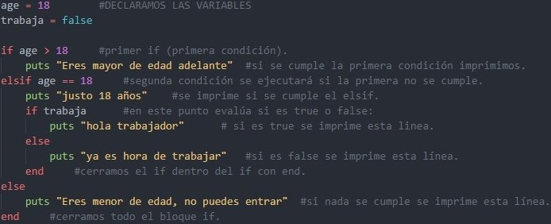2. unless es una estructura de control de flujo que se utiliza para ejecutar una sección de código solo si una condición no se cumple. En otras palabras, unless es el opuesto de if.
edad = 20
unless edad >= 18
puts "Eres menor de edad"
else
puts "Eres mayor de edad"
end
En este ejemplo, la estructura unless se utiliza para evaluar si la variable edad es menor que 18. Si la edad es menor que 18, se imprime "Eres menor de edad". Si la edad es mayor o igual a 18, se imprime "Eres mayor de edad".
En resumen, unless es una estructura de control de flujo útil para ejecutar una sección de código solo si una condición no se cumple.
3. do se utiliza para indicar el inicio del bloque de código que se ejecutará para cada elemento de la colección, y end se utiliza para indicar el final del bloque de código.
El siguiente es un ejemplo simple de cómo usar do con el método each para iterar sobre una matriz e imprimir cada elemento:
nombres = ["Ana", "María", "Juan"]
nombres.each do |nombre|
puts "El nombre es #{nombre}"
end
En este ejemplo, la variable nombres contiene una matriz de tres nombres. El método each se utiliza para iterar sobre cada elemento de la matriz. La estructura do se utiliza para delimitar el bloque de código que se ejecutará junto con cada elemento del array. En este caso, el bloque de código contiene una única línea que imprime el nombre actual en la matriz.
El resultado de este código sería:
El nombre es Ana
El nombre es María
El nombre es Juan
Es importante tener en cuenta que en Ruby, los bloques pueden delimitarse de varias formas diferentes, como do y end o { y }. En general, se recomienda usar do y end para bloques de varias líneas y { } para bloques de una sola línea.
4. while es una estructura de control de flujo útil en Ruby que permite ejecutar un bloque de código repetidamente mientras se cumple una condición específica. Sin embargo, es importante utilizarla con cuidado para evitar ciclos infinitos.
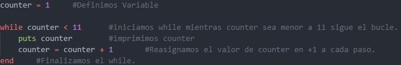
Mientras la condición sea verdadera, el bloque de código se ejecutará una y otra vez. Cuando la condición se vuelve falsa, el programa saldrá del ciclo y continuará con el resto del código.
Es importante tener en cuenta que la condición de while debe actualizarse adecuadamente dentro del bloque de código para evitar que el ciclo se ejecute infinitamente. Si la condición no cambia nunca, el programa se quedará atrapado en un ciclo infinito.
5. until es una estructura de control de flujo útil en Ruby que permite ejecutar un bloque de código repetidamente hasta que se cumpla una condición específica. Esta estructura se utiliza principalmente cuando se quiere evaluar una condición en términos negativos.
A diferencia de la estructura while, que se ejecuta mientras una condición es verdadera, la estructura until se ejecuta mientras una condición es falsa. Ambas estructuras son similares y se utilizan para controlar el flujo de un programa, pero until se puede utilizar cuando la condición que se quiere evaluar es más natural expresarla en términos negativos.
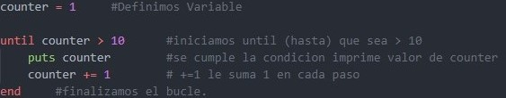
6. for es una estructura de control de flujo en Ruby que permite iterar sobre una colección de elementos, como un arreglo o un rango de números. Aunque no es tan común como otras estructuras como each y map, sigue siendo una opción válida y útil en algunos casos.
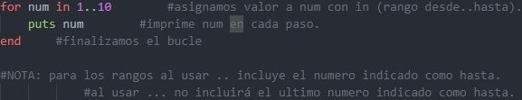
Es importante tener en cuenta que en Ruby, es más común utilizar otras estructuras de control de flujo como each y map para iterar sobre colecciones de elementos, ya que son más flexibles y poderosas que la estructura for. Sin embargo, for sigue siendo una opción válida y útil en algunos casos.
6. case when son palabras clave en el lenguaje de programación Ruby que se utilizan para realizar una serie de comprobaciones de igualdad en una expresión dada.
Por ejemplo, el siguiente código en Ruby utiliza case y when para determinar si un número es positivo, negativo o cero:
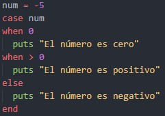
En este ejemplo, el valor de num es -5, lo que significa que la condición en el último when se cumple y se ejecuta la línea puts "El número es negativo".
7. times es un método de Ruby que se utiliza para ejecutar un bloque de código un número específico de veces. Se utiliza comúnmente para ejecutar un bloque de código un número fijo de veces, por ejemplo, para imprimir una línea de texto varias veces.
La sintaxis básica de .times es la siguiente:
5.times do
puts "I am learning in codeable!"
end
En este ejemplo, el bloque de código se ejecutará 5 veces y en cada iteración imprimirá "I am learning in codeable!". El resultado sería:
I am learning in codeable!
I am learning in codeable!
I am learning in codeable!
I am learning in codeable!
I am learning in codeable!
Resumen, Datos (Concepto, Tipos), Imprimir (puts y print), Concatenar/Interpolar, Comentar en el código, Operadores Matemáticos, Operadores de comparación, Operadores Lógicos, Control Flow.
Ruby Basic 2
Arrays
Concepto
Un array es una colección ordenada de elementos del mismo tipo de datos, que se pueden acceder y manipular a través de un índice numérico. Los arrays en Ruby pueden contener cualquier tipo de objeto, incluyendo otros arrays.
Los arrays en Ruby se definen utilizando corchetes [ ] y separando los elementos por comas.
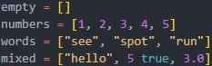
Además, Ruby proporciona varios métodos útiles para trabajar con arrays, como por ejemplo:
- length o size: para obtener el número de elementos de un array.
- join: para unir los elementos de un array en una cadena de texto.
- sort: para ordenar los elementos de un array.
- reverse: para invertir el orden de los elementos en un array.
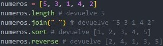
Indice de un array
Cada elemento dentro de un array se identifica mediante un índice numérico que comienza en cero y se incrementa en uno para cada elemento adicional.
Podemos acceder a un elemento específico en el array utilizando su índice. El primer elemento del array tiene un índice de 0, el segundo tiene un índice de 1, y así sucesivamente. Por lo tanto, para acceder al primer elemento del array (1), utilizamos el índice 0:
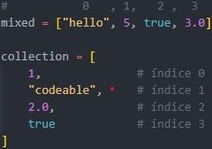
Nested Arrays (Arreglo dentro de un arreglo)
Los nested arrays (arrays dentro de arrays) son una estructura de datos que permiten almacenar una colección de elementos, donde uno o más de los elementos son a su vez arrays.
En otras palabras, un nested array es un array que contiene otros arrays como elementos. Esto permite representar estructuras de datos más complejas, como matrices, tablas, y listas de listas.
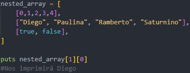
Arrays Operators (Operadores de arreglos)
Los operadores de arrays en Ruby son un conjunto de métodos y símbolos que se utilizan para realizar operaciones comunes en arrays. Estos operadores son una parte importante del lenguaje Ruby, ya que permiten manipular y transformar arrays de manera eficiente y legible.
Los operadores de arrays más comunes en Ruby incluyen:
+ : Este operador se utiliza para concatenar dos arrays.
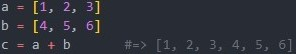
- : Este operador se utiliza para eliminar los elementos de un array que también aparecen en otro array. (todos los elementos del segundo array -el que viene a restar- mas los elementos del primer array -al que se le resta- que se repitan en el segundo)
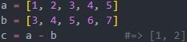
& : El operador de intersección devuelve un nuevo array que contiene sólo los elementos que están presentes en ambos arrays.
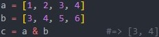
| : El operador de unión devuelve un nuevo array que contiene todos los elementos de ambos arrays, sin duplicados.
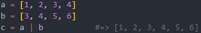
También es posible utilizar los métodos intersection y union para realizar estas operaciones.

* : Este operador se utiliza para repetir un array un número determinado de veces.
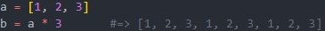
[ ] : Este operador se utiliza para acceder a un elemento específico de un array mediante su índice. También se puede utilizar para acceder a un rango de elementos.
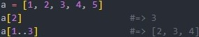
Arrays Methods (Metódos en un arreglo)
En Ruby, los arrays tienen una amplia variedad de métodos disponibles para manipularlos y acceder a ellos. Algunos de los métodos más comunes son:
at : Este método se utiliza para acceder a un elemento específico de un array mediante su índice. Es equivalente a utilizar el operador [ ].
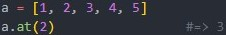
push : Este método se utiliza para agregar un elemento al final de un array.
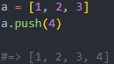
shift : Este método se utiliza para eliminar el primer elemento de un array y devolverlo.
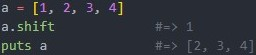
length o size : Estos métodos se utilizan para obtener el tamaño de un array.
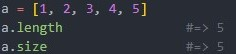
sort : Este método se utiliza para ordenar los elementos de un array.
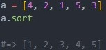
reverse : Este método se utiliza para invertir el orden de los elementos de un array.
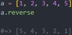
compact : Este método se utiliza para eliminar los elementos nulos de un array.
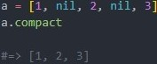
map o collect : : Estos métodos se utilizan para transformar los elementos de un array mediante una función.
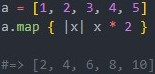
each : Este método se utiliza para iterar sobre los elementos de un array.
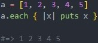
NOTA: each y map hacen los mismo a diferencia que each solo opera dentro del arreglo y fuera de él no se conserva su nuevos valores, en cambio maps puede asignar el valor a una nueva variable y usarse fuera del arreglo.
each_with_index : Se utiliza para iterar sobre un array y al mismo tiempo acceder al índice de cada elemento. Este método toma un bloque que recibe dos argumentos: el primer argumento es el valor del elemento y el segundo argumento es el índice del elemento.
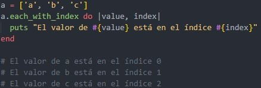
Estos son solo algunos de los métodos disponibles para los arrays en Ruby. Hay muchos más que puedes explorar en la documentación oficial de Ruby.
Hashes
Concepto
Un hash es una colección de pares key-value, donde cada key está asociada a un value único. Los hashes se definen utilizando llaves { } y los pares key-value se separan por comas.
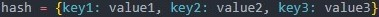
Las keys pueden ser cualquier objeto de Ruby, pero generalmente se utilizan símbolos o cadenas de texto. Los valores también pueden ser cualquier objeto de Ruby, incluyendo otros hashes.
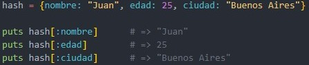
Symbol
los símbolos son objetos inmutables que se utilizan como identificadores únicos en el programa. Los símbolos se definen anteponiendo los dos puntos ( : ) al nombre del símbolo.
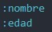
Los símbolos son útiles porque ocupan menos memoria que las cadenas de texto, y porque son más eficientes para comparar y buscar en el programa.
Dentro de un hash el símbolo se utiliza como key y se convierte automáticamente en un símbolo.
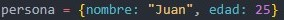
En este caso, nombre: es un símbolo que se utiliza como key en el hash, y "Juan" es el value asociado a la key.
Methods in Hashes
En Ruby, un método es una pieza de código que realiza una tarea específica y se puede llamar en cualquier parte del programa.
Algunos ejemplos de metodos:
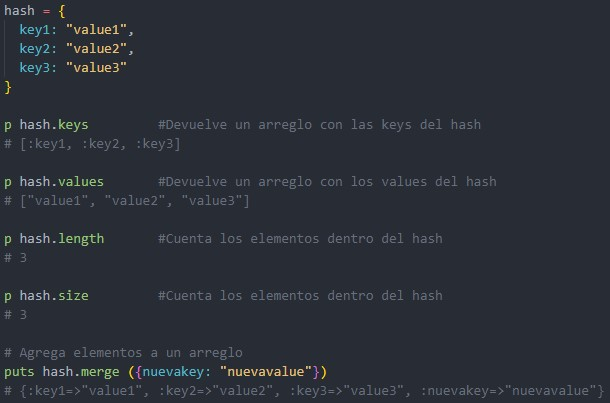
MAP in Hashes
En Ruby, el método .map se puede utilizar en una hash para transformar los values de un hash, pero no las keys. El método .map devuelve un array con los resultados de la operación realizada en cada valor del hash.
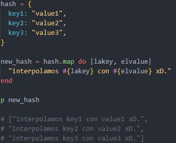
Arrays : Concepto, Indice de un array, Nested Arrays, Arrays Operators, Arrays Methods.
Hashes : Concepto, Symbol, Methods in Hashes, MAP in Hashes.
Concepto
En Ruby, un método es una pieza de código que se puede llamar o invocar para realizar una tarea específica. Los métodos son definidos dentro de clases o módulos, y pueden ser públicos, privados o protegidos, lo que afecta su visibilidad y accesibilidad.
Para definir un método en Ruby, se utiliza la palabra clave def seguida del nombre del método y sus argumentos entre paréntesis (si los tiene). Luego, el cuerpo del método se escribe entre las palabras clave def y end.
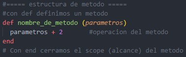
Invoque Methods (llamando al método)
Para invocar o llamar a un método lo hacemos con el nombre del método seguido de unos parentesis donde debemos indicar un argumento para el parámetro, (entiéndase como asignarle un valor a una variable)
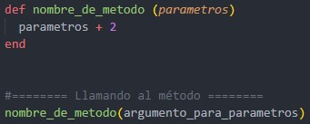
Return Explicit and Implicit
En Ruby, hay dos formas diferentes en las que los métodos pueden devolver valores: "Return Explicit" y "Return Implicit".
Explicit Return : se refiere a cuando se utiliza la palabra clave "return" para indicar que una función o método debe devolver un valor específico.
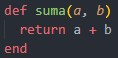
Implicit return : se produce cuando la última línea de una función o método es una expresión que se evalúa como el valor de retorno.
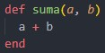
Es importante tener en cuenta que la mayoría de las veces en Ruby se utiliza el retorno implícito, ya que es más conciso y hace que el código sea más fácil de leer. Sin embargo, en ciertas situaciones, puede ser necesario utilizar el retorno explícito para devolver un valor específico.
Default Arguments
Los "default arguments" son valores predeterminados que se pueden asignar a los parámetros de un método. Esto significa que si no se proporciona un argumento al invocar al método, se usará el valor predeterminado.
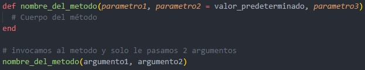
En este caso, el segundo parametro tiene un valor predeterminado, mientras que el primer y tercer parametro son obligatorios. Si se invoca al método con dos argumentos, el segundo parametro conserva el valor predeterminado como argumento y el tercer parametro recibirá el segundo argumento que se proporciona.
Truthy y Falsy
En Ruby, un valor "truthy" se refiere a cualquier valor que se evalúa como verdadero en un contexto booleano. Por otro lado, un valor "falsy" se refiere a cualquier valor que se evalúa como falso en un contexto booleano.
En general, los siguientes valores se consideran Truthy en Ruby:
- Cualquier valor numérico diferente de cero (por ejemplo, 1, 3.14, -5).
- Cualquier cadena de caracteres no vacía (por ejemplo, "hola", "Ruby").
- Cualquier objeto (por ejemplo, una instancia de una clase personalizada).
- Cualquier arreglo, hash o estructura de datos que no esté vacía.
- El valor booleano true.
Por otro lado, los siguientes valores se consideran Falsy en Ruby:
- El valor booleano false.
- El valor nulo (nil).
- El número cero (0).
- Una cadena de caracteres vacía ("").
- Un arreglo, hash o estructura de datos vacía.
Es importante tener en cuenta que el concepto de Truthy y Falsy en Ruby es específico del contexto booleano. En otros contextos, estos mismos valores pueden tener un comportamiento diferente. Por ejemplo, el número cero puede ser válido en un contexto numérico, pero se evalúa como Falsy en un contexto booleano.
Keywords Arguments
En Ruby, los argumentos de palabras clave (o "keyword arguments" en inglés) son una característica que permite pasar argumentos a un método mediante la especificación de sus nombres explícitamente.
Por defecto, los argumentos de un método en Ruby se pasan por orden de posición, lo que significa que el primer argumento que se especifica se asigna al primer parámetro del método, el segundo argumento se asigna al segundo parámetro, y así sucesivamente. Sin embargo, cuando se utilizan argumentos de palabras clave, el orden de los argumentos ya no importa, ya que se especifican explícitamente los nombres de los parámetros que se están pasando.
Para definir un método con argumentos de palabras clave, se utiliza el símbolo : antes del nombre del parámetro en la lista de argumentos.
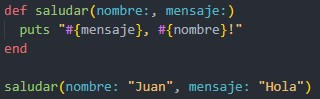
En este ejemplo, el método saludar toma dos argumentos de palabras clave: nombre: y mensaje:. Cuando se llama a este método, se debe especificar el nombre de cada argumento junto con su valor. De esta manera, el orden de los argumentos ya no importa, y es más fácil entender qué valor se está pasando a cada parámetro. Los argumentos de palabras clave también pueden tener valores predeterminados, lo que permite omitirlos al llamar al método y usar su valor por defecto.
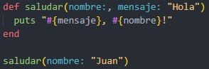
En este ejemplo, el argumento mensaje tiene un valor predeterminado de "Hola", por lo que se puede llamar al método sin especificar este argumento: Esto imprimirá "Hola, Juan!".
Splat Operator
El Splat Operator se representa por el símbolo * y se utiliza para indicar que un parámetro puede recibir cierta cantidad de argumentos, que serán tratados como un arreglo dentro del método.
Cuando se utiliza el Splat Operator en el contexto de los parámetros de un método, puede aparecer tanto al inicio como al final de la lista de parámetros, aunque es más común encontrarlo al final. Si se utiliza al inicio, indica que el método espera al menos un argumento, y los demás argumentos opcionales pueden ser proporcionados como un arreglo. Si se utiliza al final, indica que el método espera cualquier cantidad de argumentos, y que éstos serán capturados en un solo arreglo.
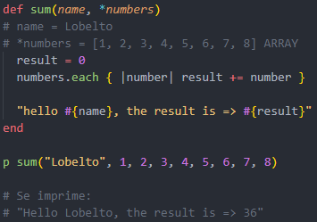
En este ejemplo, el Splat Operator indica que el método sum puede recibir cualquier cantidad de argumentos, que serán tratados como un array llamado numbers dentro del método sum. Luego, se utiliza un ciclo each para sumar los números del arreglo y devolver el resultado.
En Ruby, el Double Splat Operator (**), también conocido como "hash rocket", permite a los parametros recibir argumentos del tipo Keywords Arguments los cuales serán tratados como un hash. El Double Splat Operator convierte estos Keywords Arguments en un hash con sus keys y values correspondientes.
Concepto, Retorno Implicito y Explicito, Default Arguments, Truthy y Falsy, Keywords Arguments, Splat Operator, Double Splat Operator.